App do motorista
O que você faz no app, o que o app não aceita, e o que fazer quando algo dá errado.
Atualizado em 19/10/2026 app.motorista.moveelog.com.br
Esta é a parte que resolve a maioria das dúvidas. Se o app recusou algo seu, provavelmente está aqui.
O app compara o CNPJ de quem emitiu a nota com o CNPJ do seu login. Nota de colega, ou emitida no seu CPF, é recusada antes da conferência.
O que fazer: Emita a nota com o CNPJ da sua empresa — o mesmo com que você entra no app.
Pelo app, só entra conta no CNPJ da sua própria empresa.
O que fazer: Peça ao escritório. Eles cadastram conta de pessoa física por você.
O documento do titular tem que ser o mesmo CNPJ do seu login.
O que fazer: Use uma conta no CNPJ da sua empresa.
O sistema só aceita conta corrente, em qualquer caminho.
O que fazer: Use uma conta corrente, ou fale com o escritório.
O campo aceita só um número de 0 a 9.
O que fazer: Fale com o escritório para cadastrar a conta por você.
O limite é um por dia, e dias sem pedido não acumulam.
O que fazer: Espere o próximo dia liberado.
Depois de aprovada, o envio é bloqueado para não duplicar.
O que fazer: Nada a fazer. Está tudo certo.
O app precisa do arquivo XML, que é o que tem os dados conferíveis.
O que fazer: Baixe o arquivo .xml no portal onde você emitiu a nota.
A aprovação avisa o escritório. Uma pessoa confere e libera o pagamento.
O que fazer: Acompanhe com o escritório. Não há prazo automático.
Você entra com o CNPJ da sua empresa — nunca com CPF.
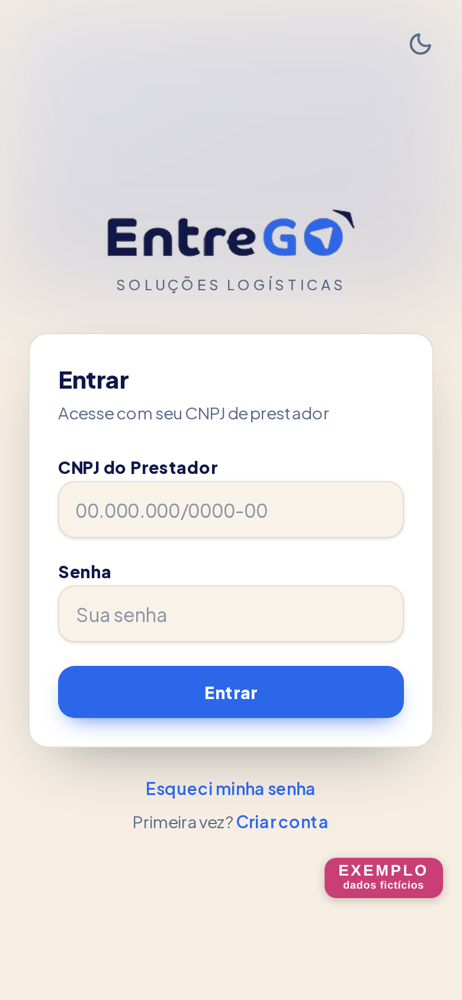
Se aparecer que o CNPJ não está liberado, fale com o escritório: seu cadastro ainda não foi incluído.
Se você não tem e-mail cadastrado, o link não chega. Peça ao escritório para cadastrar seu e-mail.
Depois de 10 tentativas erradas, o app bloqueia por 15 minutos. Espere — não é problema no seu cadastro.
Vale instalar o app na tela inicial do celular. No iPhone, isso é obrigatório para receber avisos.
A tela Início mostra o movimento em aberto: é o que você vai faturar.
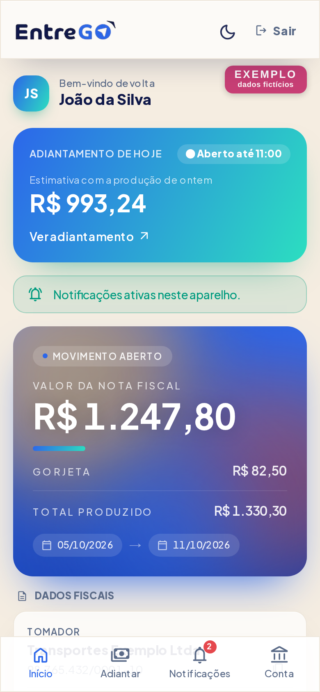
| O que aparece | O que significa |
|---|---|
| Valor da nota fiscal | O valor exato que deve sair na sua nota. Nem mais, nem menos. |
| Gorjeta | Valor que você recebe mas que não entra na nota. Só aparece quando existe. |
| Total produzido | A soma dos dois. É o que você recebe no total. |
Mais abaixo na mesma tela estão os dados de quem você precisa colocar na nota: o Tomador, o CNPJ dele, o endereço, o e-mail e o código de Tributação Nacional. Cada um tem um botão de copiar — use-os para não errar ao digitar.
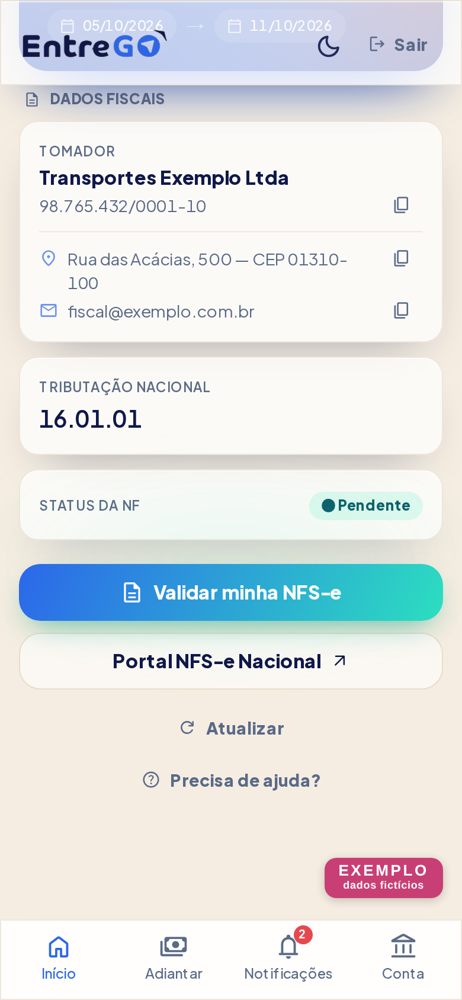
| Status | O que significa |
|---|---|
| Pendente | Você ainda não enviou uma nota aprovada para esta semana. |
| Aprovada | Sua nota já foi aceita. Não precisa enviar de novo. |
A nota tem que sair com o Valor da nota fiscal, não com o Total produzido. Se você emitir pelo total, a nota é recusada por valor divergente.
Você emite a nota no portal e manda o arquivo XML pelo app. A conferência é na hora.
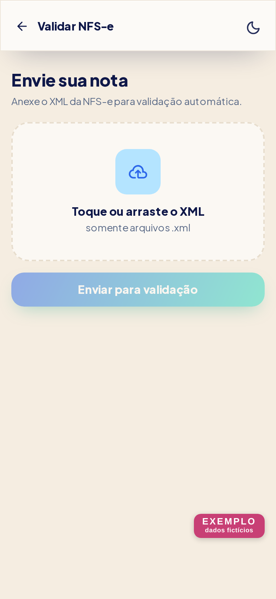
Pronto. O status na Início vira Aprovada e o envio fica bloqueado para não duplicar.
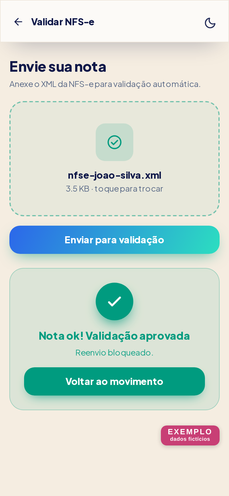
O app mostra exatamente quais campos estão errados. Cancele essa nota, emita uma nova com os campos corrigidos e envie de novo.
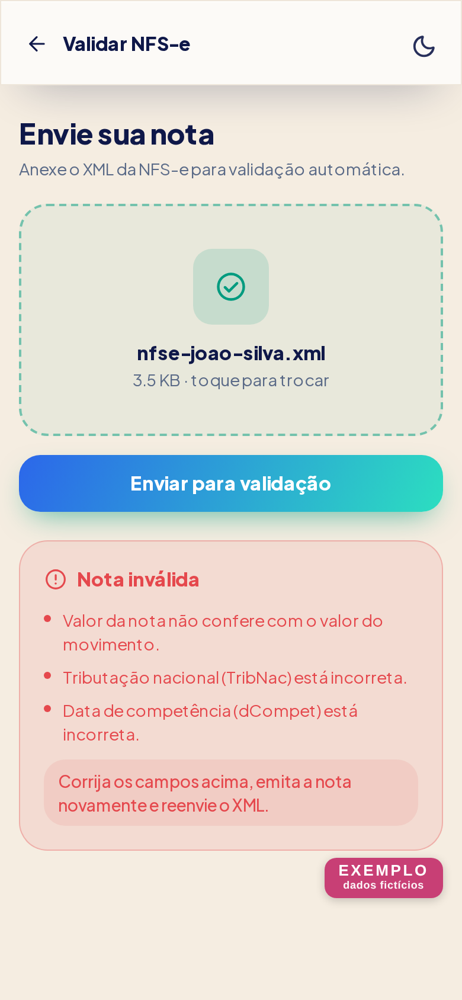
| O app diz | Corrija isto na nota |
|---|---|
| Valor da nota não confere com o valor do movimento | O valor tem que ser igual ao Valor da nota fiscal da tela Início |
| CNPJ do tomador está incorreto | Use o CNPJ do Tomador que aparece em Dados Fiscais |
| CNPJ do prestador (você) está incorreto | A nota tem que ser emitida com o CNPJ do seu login |
| Tributação nacional está incorreta | Use o código de Tributação Nacional que aparece na tela |
| Data de competência está incorreta | Ajuste a competência da nota |
| Descrição do serviço está incorreta | A descrição precisa seguir o que foi combinado |
O arquivo precisa ser .xml e ter no máximo 2 MB. Foto e PDF não servem.
Se você deixou alguma semana sem nota, o app avisa na Início com o card Notas pendentes.
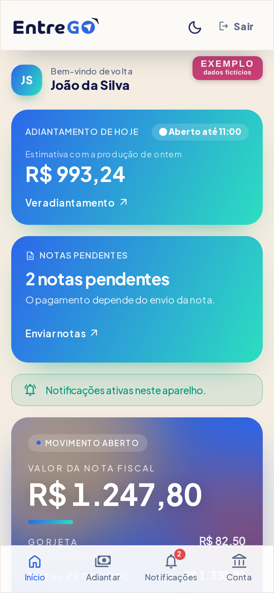
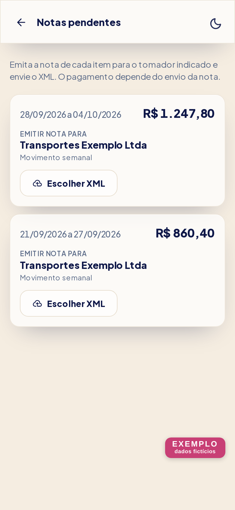
A lista não volta indefinidamente: o escritório define a partir de qual semana as notas podem ser regularizadas. Semanas mais antigas que esse limite não aparecem — fale com o escritório.
Depois que sua nota é aprovada, o escritório confere e libera o pagamento. Não é automático e não tem prazo definido.
Se sua nota foi recusada, o item **volta para esta lista** e o app mostra o que estava errado. Cancele a nota recusada, emita outra com os campos corrigidos e envie de novo aqui mesmo.
É a conta onde você recebe o adiantamento. Toda conta nova passa pela análise do financeiro.
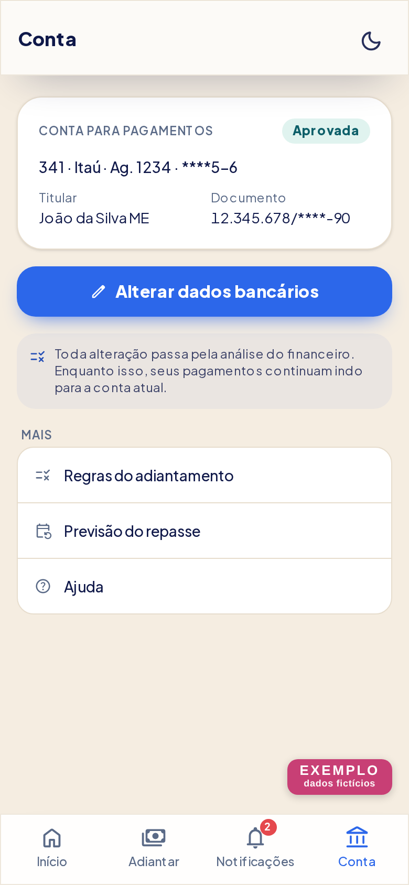
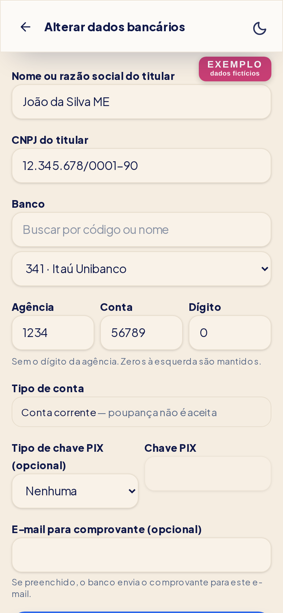
Enquanto a conta nova está Em análise, seus pagamentos continuam indo para a conta aprovada anterior, se você já tinha uma.
Se o app disser "CNPJ inválido, ou não é o CNPJ da sua conta", a conta não está no seu CNPJ. Se ela for no seu CPF, fale com o escritório.
Você antecipa parte do que produziu ontem. O valor é descontado do seu repasse da semana.
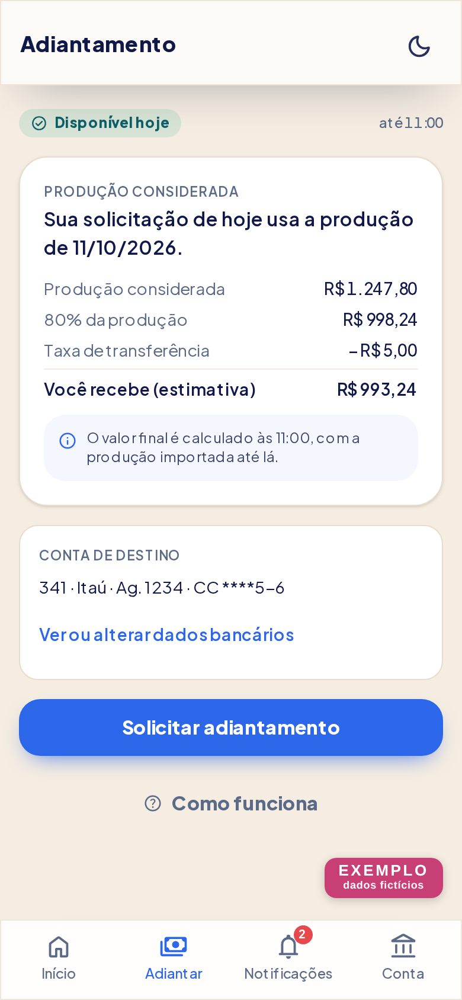
Os dias, o horário, o percentual e a taxa são definidos pela empresa. A tela Como funciona sempre mostra os valores que estão valendo hoje.
| O app diz | O que fazer |
|---|---|
| Hoje não é um dia habilitado | A tela mostra a próxima data liberada |
| O horário ainda não abriu | Volte dentro da janela do dia |
| O horário já encerrou | Tente no próximo dia liberado |
| Você já tem uma solicitação hoje | É uma por dia |
| Cadastre uma conta bancária | Cadastre na aba Conta |
| Sua conta bancária ainda está em análise | Espere a aprovação do financeiro |
| Não houve produção suficiente | A produção de ontem não dá valor para liberar |
Dá para cancelar até o horário de corte do mesmo dia. Depois disso o pedido segue para o cálculo.
A taxa é descontada do valor que você recebe. O valor bruto do adiantamento é abatido do repasse da semana.
A equipe pode mandar avisos direto para o seu celular. Para receber, você precisa ativar.
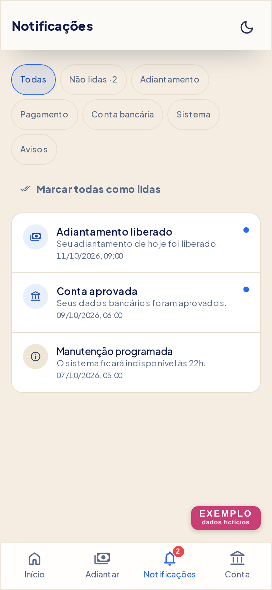
No iPhone, você precisa instalar o app na tela inicial: toque em Compartilhar e depois em "Adicionar à Tela de Início". Sem isso o iPhone não entrega os avisos.
Se você negou a permissão antes, o app não consegue pedir de novo. É preciso liberar nas configurações do navegador ou do celular.
As mensagens que mais aparecem e o que fazer em cada uma.
| Se aparecer | O que fazer |
|---|---|
| CNPJ ou senha incorretos | Confira os números. Se é a primeira vez, toque em Criar conta. Se esqueceu, use Esqueci minha senha. |
| Conta inativa | Seu acesso foi desativado. Fale com o escritório. |
| Muitas tentativas de login | Espere 15 minutos. |
| Este link não vale mais | O link de senha passou de 60 minutos ou já foi usado. Peça outro. |
| Se aparecer | O que fazer |
|---|---|
| Este XML não pertence ao seu CNPJ | A nota foi emitida por outro CNPJ. Emita com o seu. |
| Arquivo muito grande | O limite é 2 MB. Envie o XML original da nota, que é pequeno. |
| Arquivo inválido | O arquivo não é um XML de nota. Baixe de novo no portal. |
| Nenhum movimento em aberto para validar | Não há semana esperando nota. Se você acha que deveria ter, fale com o escritório. |
| Nota já aprovada | Está tudo certo. Não precisa enviar de novo. |
| Serviço de validação indisponível | O sistema de conferência está fora do ar. Tente daqui a pouco. |
| Se aparecer | O que fazer |
|---|---|
| CNPJ inválido, ou não é o CNPJ da sua conta | A conta precisa estar no CNPJ do seu login. Se for no seu CPF, fale com o escritório. |
| Agência inválida | Digite só números, sem o dígito da agência. |
| Dígito da conta inválido | Use um único número. Se o seu dígito é X, fale com o escritório. |
| Escolha um banco da lista | Busque o banco pelo nome que você conhece (como Nubank ou PicPay) ou pelo código, e toque nele na lista. |
| Se aparecer | O que fazer |
|---|---|
| As regras foram atualizadas | Atualize a tela e tente de novo. |
| Essa ação não é mais possível | Passou o horário de cancelar, ou a situação do pedido mudou. |
| Muitas tentativas em pouco tempo | Espere alguns minutos. |
Este guia descreve o app como ele funciona hoje. Se algo na tela não corresponder ao que está aqui, fale com o escritório.
Este guia e a tela Ajuda dentro do app saem do mesmo arquivo de conteúdo
(lib/ajuda-conteudo.json), então as duas versões nunca divergem.